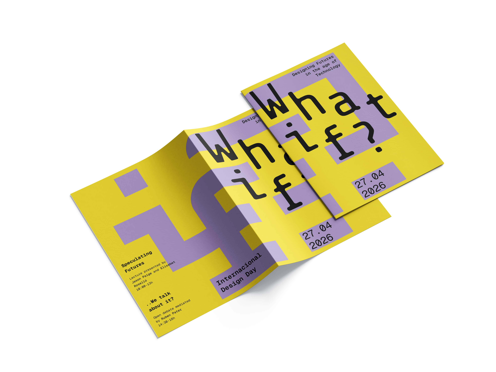
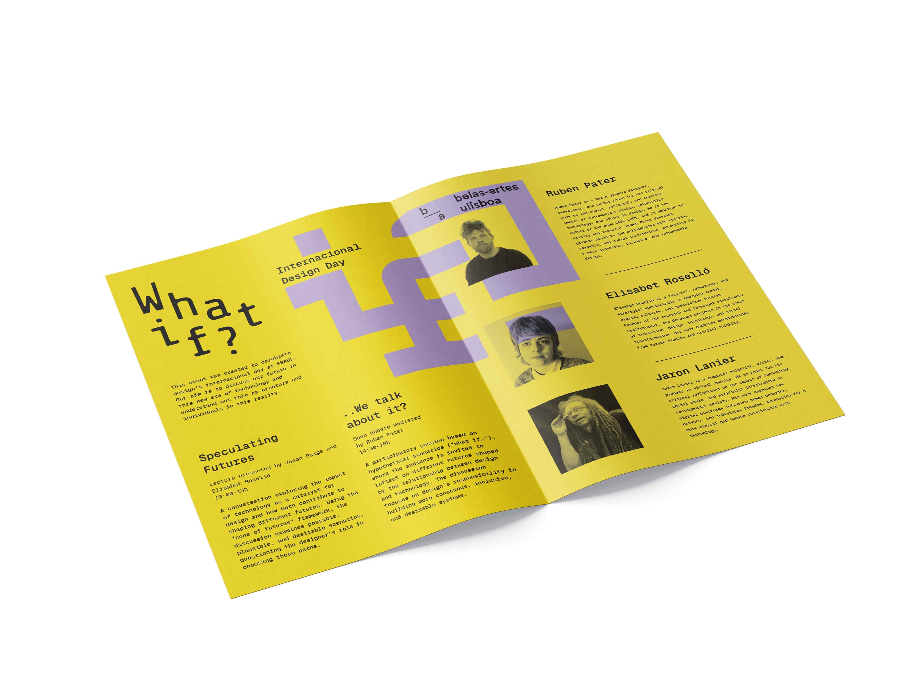
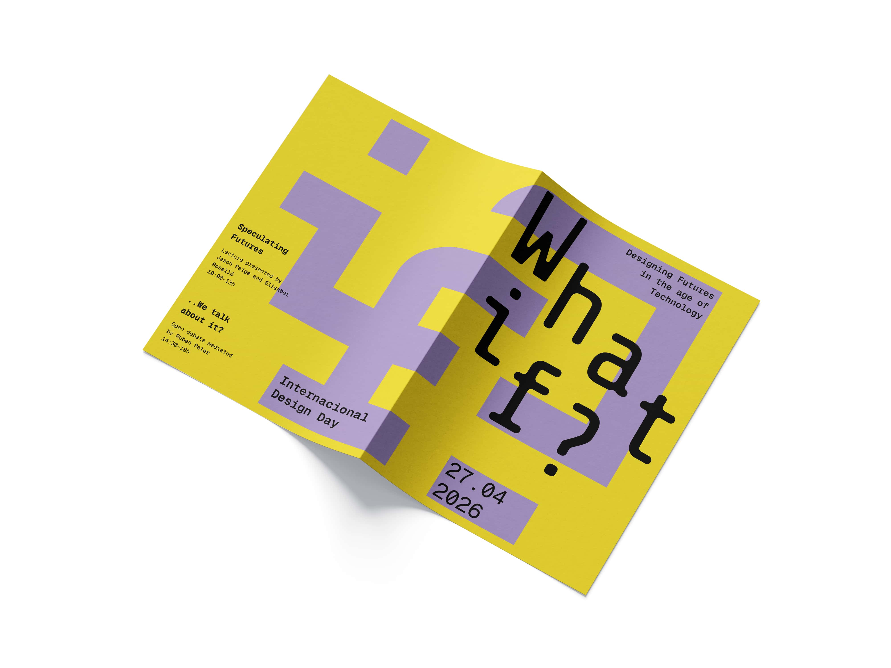
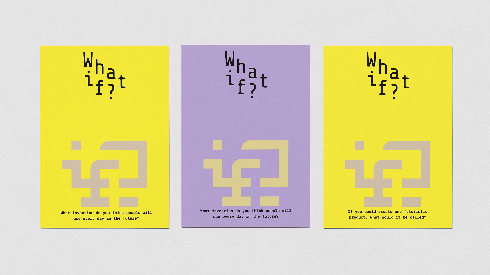
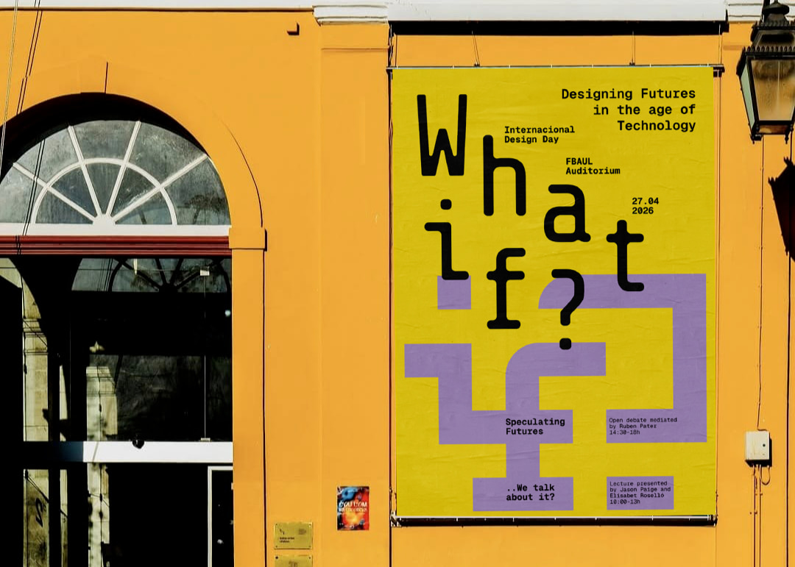
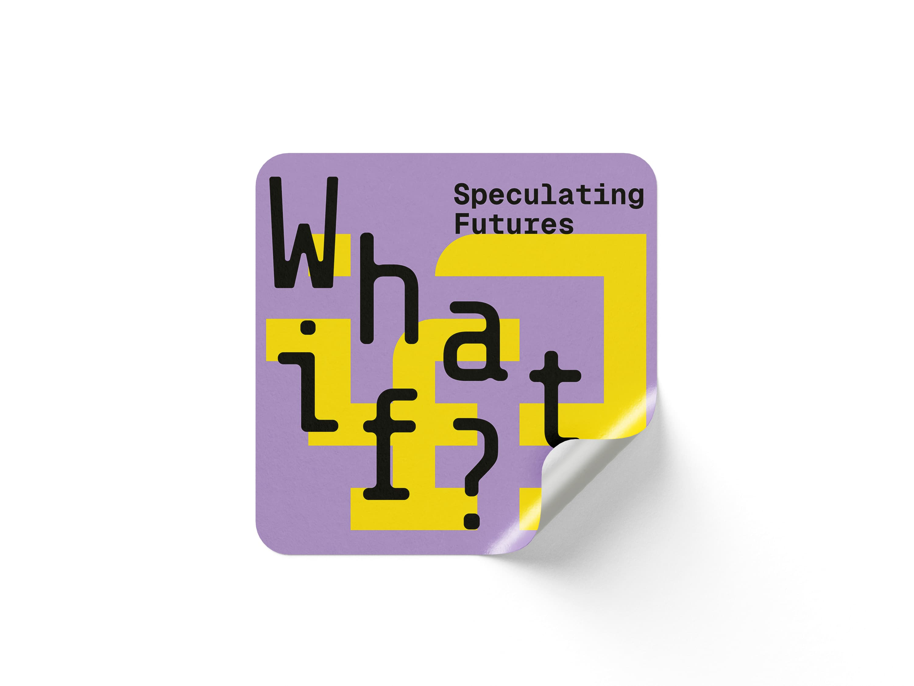
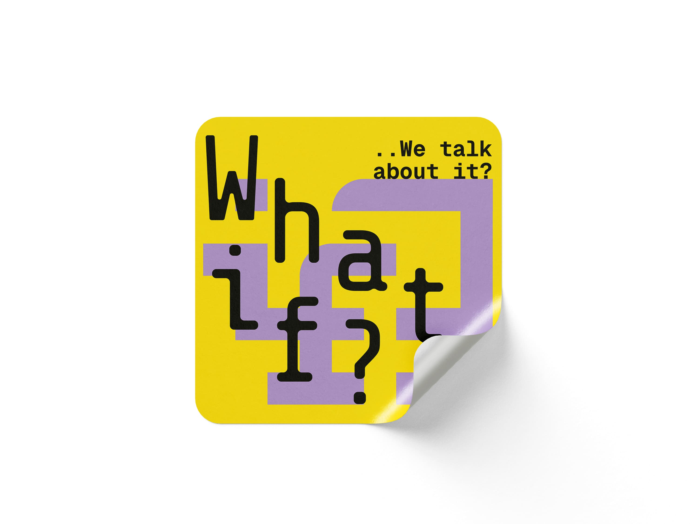

What if?
Design
W/ Inês Ramos
(2026)
'What if?' is an event created to celebrate design's internacional day in the Faculty of Fine arts in Lisbon. This event aims to discuss how designers can build a future for themselves and speculate on the various possible, plausible, probable and preferable futures ahead.







For this project I worked mainly on the flyer, the creation of the symbol, the poster on the entrance of FBAUl and the color scheme for the event.